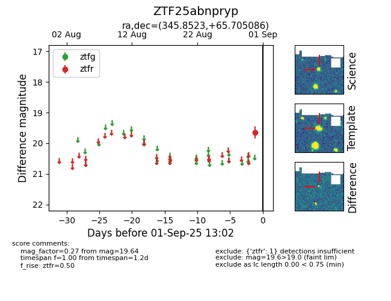

FINK: ZTF25abnpryp
Lasair: ZTF25abnpryp
ALeRCE: ZTF25abnpryp
ZTF25abnpryp (ztf,fink)
equatorial (ra, dec) = (345.8523,+65.70509)
galactic (l, b) = (112.1202,+5.12690)

last atlaso=19.37, ztfr=19.64
1 atlaso, 1 ztfr detections